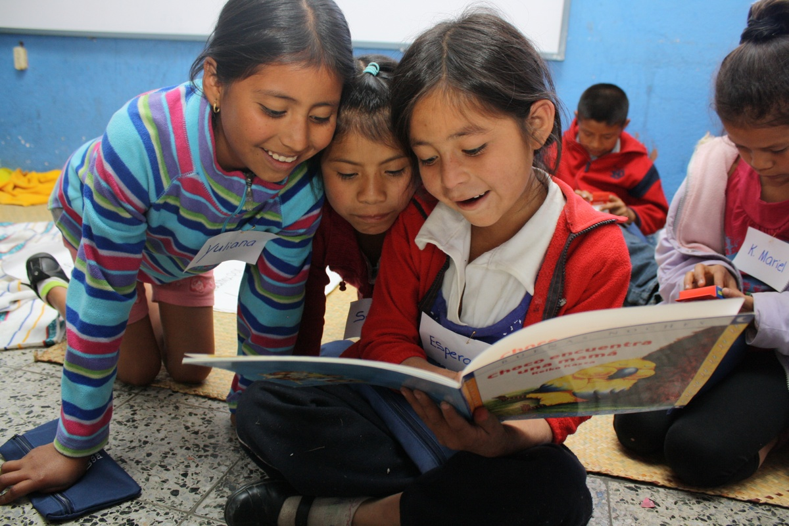
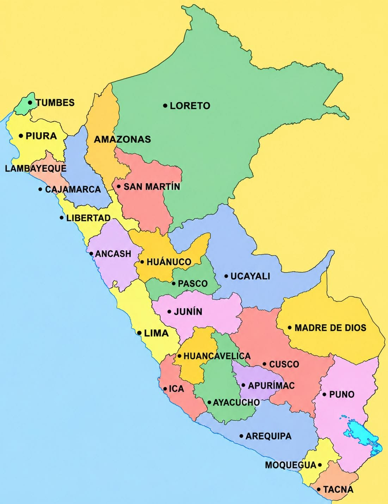
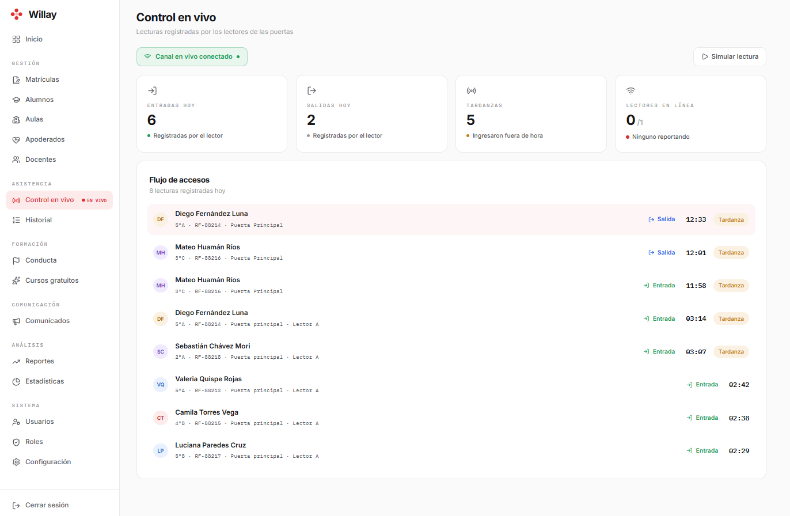
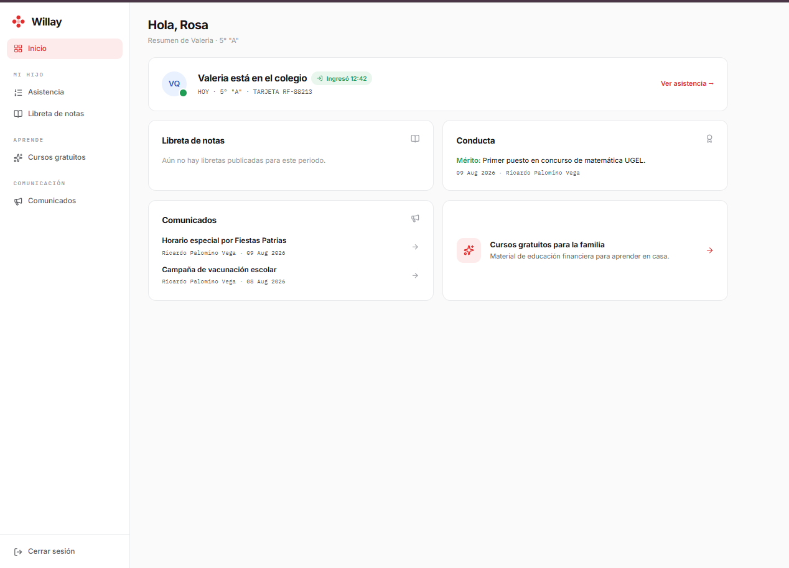
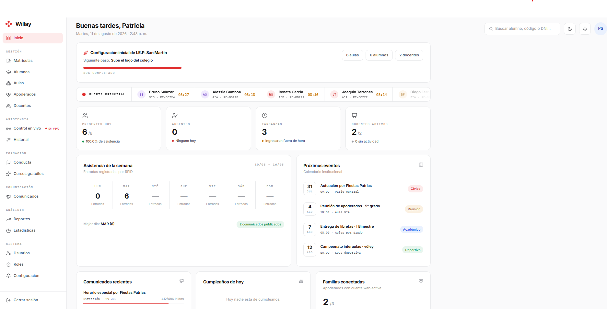

El carné de tu institución educativa convertido en tranquilidad para cada familia
Willay registra el ingreso y la salida de cada estudiante con un tap RFID o QR, y avisa a la familia al instante. Libretas digitales, comunicados y reportes, en un solo panel para tu institución educativa.
Del papeleo diario a la tranquilidad de saber
-
Del cuaderno de asistencia al registro automático. El estudiante acerca su carné o QR y el sistema registra la hora exacta, sin apuntar nada a mano.
-
De la reunión de entrega de libretas a la libreta digital. La familia ve y descarga la libreta de cada bimestre desde la plataforma, cuando pueda.
-
De padres sin información a una alerta en el momento. En cuanto se registra el ingreso o la salida, la familia lo ve dentro de la plataforma.
-
De la matrícula en papel a la matrícula validada. Registro individual o por Excel, con revisión de errores antes de guardar.

Presencia de Willay en el Perú
Hoy operamos en Trujillo, La Libertad, y seguimos sumando instituciones educativas en nuevas regiones del país.
Pasa el cursor o toca en móvil sobre el punto del mapa para ver el detalle

Cada persona de la institución educativa ve solo lo que necesita
Dirección, docentes, secretaría, padres y estudiantes entran al mismo sistema, cada uno desde su propio panel y con sus propios permisos
Dirección y administración
Vista completa de la institución educativa: indicadores del día, matrículas, aulas y reportes exportables por alumno
Docentes
Solo sus aulas asignadas: registran méritos y observaciones de conducta, y publican la libreta de notas de cada bimestre
Secretaría
Matrícula individual o masiva por Excel, con validación de errores antes de guardar cualquier dato del alumno
Padres de familia
Alerta en la plataforma en cuanto su hijo o hija ingresa o sale, y acceso a sus libretas, conducta y comunicados
Estudiantes
Su espacio con credencial digital y QR, su asistencia, sus libretas publicadas, comunicados y cursos gratuitos
Así funciona Willay
Del ingreso del estudiante a la tranquilidad de su familia
Toca cualquier paso para verlo en la demo interactiva
El estudiante registra su ingreso
Acerca su carné al lector RFID o utiliza su código QR al ingresar o salir de la institución educativa
Ver en la demo
Willay registra la hora
El sistema identifica al estudiante y guarda la hora exacta, marcando si llegó puntual o con tardanza
Ver en la demo
La familia recibe una alerta
Padres o apoderados ven la notificación dentro de la plataforma en cuanto el estudiante ingresa o sale
Ver en la demo
La I.E. consulta los reportes
Dirección revisa asistencia, ingresos y salidas por estudiante, aula o sede, y los exporta a Excel
Ver en la demoRecorre el panel de Willay
Una demo interactiva con pantallas reales del sistema: dirección, docentes, padres y estudiantes.
Todo lo que necesita una institución educativa en un solo panel
Del ingreso por la puerta a la libreta de fin de bimestre, sin cuadernos ni carpetas sueltas
Libretas de notas digitales
Libreta oficial escaneada cada bimestre, lista para ver y descargar desde la plataforma.
Alertas a la familia
Notificación en la plataforma en cuanto el estudiante ingresa o sale.
Comunicados
Para toda la institución educativa o para un aula específica, con seguimiento de lectura.
Matrícula con Excel
Registro individual o masivo de alumnos, con validación de errores antes de guardar cualquier dato.
Reportes exportables
Padrón de estudiantes y asistencia, por código de alumno, aula o sede, listos para descargar en Excel.
Credenciales digitales
Carné con código QR para cada estudiante, sin exponer datos personales: solo un identificador interno.
Roles y permisos
Dirección, docentes, secretaría, padres y estudiantes: cada uno con su propio acceso.
Cursos de educación financiera
Catálogo de cursos gratuitos para estudiantes y familias.
Los datos de los estudiantes protegidos
Willay es una plataforma multi-institución: varias instituciones educativas usan el mismo sistema, cada una con su información completamente separada de las demás
Cuentas autorizadas
Ninguna cuenta se crea sin que la institución educativa lo autorice primero
Contraseñas privadas
Nadie más que su dueño conoce su contraseña
Datos aislados
La información de cada institución educativa está completamente separada de las demás
Cifrado en toda la plataforma
La conexión entre tu institución educativa y Willay siempre viaja cifrada (HTTPS)
¿Listo para dejar atrás el cuaderno de asistencia?
Conversemos sobre tu institución educativa, el lector y los carnés, y cómo Willay se adapta a tu forma de trabajar.
Cuéntanos sobre tu institución educativa
Te contactamos para coordinar una demostración con la información de tu institución, sin compromiso.
- Instalamos el lector y los carnés.
- Te mostramos el panel de dirección, docentes, secretaría, padres y estudiantes.
- Definimos juntos los módulos que tu institución necesita.
Todo lo que necesitas saber sobre Willay
Conoce cómo la plataforma ayuda a instituciones educativas, familias y estudiantes en el día a día.
¿Qué es Willay?
Willay es una plataforma de gestión escolar para instituciones educativas del Perú: asistencia RFID o QR, libretas digitales, comunicados, matrícula y reportes en un solo sistema.
¿Cómo registra Willay la asistencia escolar?
El estudiante acerca su carné RFID o código QR al lector, y Willay registra la hora de ingreso o salida para que la institución educativa consulte los reportes.
¿Las familias reciben alertas de ingreso y salida?
Sí. Cuando se registra un ingreso o salida, los padres o apoderados pueden ver la alerta dentro de la plataforma.
¿Cómo solicito una demo de Willay?
Completa el formulario de esta página o escribe a hola@willay.pe para coordinar una demostración adaptada a tu institución educativa.